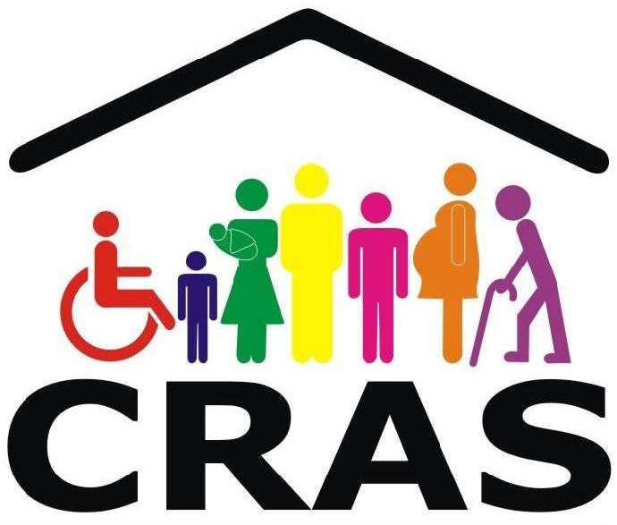

CRAS
O Centro de Referência de Assistência Social (CRAS) é uma unidade pública da política de assistência social, de base local, integrante do Sistema Único de Assistência Social (SUAS). Os CRAS estão localizados em áreas com altos índices de vulnerabilidades e risco social. Belo Horizonte conta hoje com 34 unidades e cada uma delas referencia cinco mil famílias e atende no mínimo mil famílias por ano. Na capital mineira são mais de 150 mil pessoas atendidas nas nove regionais de Belo Horizonte.
Saiba MaisCREAS
Centro de Referência Especializado de Assistência Social (CREAS) é uma unidade pública de Assistência Social que atende as pessoas e famílias (crianças, adolescentes, jovens, adultos, idosos, mulheres) que estão vivendo situações de violência ou violação de direitos. ecepciona, acolhe as pessoas, fortalece vínculos familiares e comunitários, disponibiliza informações sobre Direitos e viabiliza acesso a outros serviços, benefícios e programas. O objetivo é auxiliar as pessoas a superar as violências sofridas ou a diminuir os danos causados por elas.
Saiba MaisUnidade de
O acolhimento institucional é uma das medidas de proteção prevista no Estatuto da Criança e do Adolescente (ECA), aplicada a crianças e adolescentes que foram retiradas de seu convívio familiar, uma vez que tiveram seus direitos ameaçados e/ou violados, seja por ação ou omissão da sociedade ou do Estado, seja por falta, omissão ou abuso dos pais ou responsáveis, e em razão de suas condutas. Configura-se como uma medida excepcional e provisória de proteção aos direitos da criança e do adolescente. Os que hoje vivem a realidade de estarem em uma instituição de acolhimento são aqueles que sofreram graves e/ou reiteradas situações de negligência, maus tratos, abandono, violências, abusos por seus familiares ou responsáveis.
Saiba MaisSCFV
O Serviço de Convivência e Fortalecimento de Vínculos (SCFV) é um conjunto de serviços realizados em grupos, de acordo com o seu ciclo de vida, e que busca complementar o trabalho social com famílias e prevenir a ocorrência de situações de risco social. Além disso, o SCFV fortalece as relações familiares e comunitárias e promove a integração e a troca de experiências entre os participantes, valorizando o sentido de vida coletiva. É realizado por meio do Serviço de Proteção e Atendimento Integral às Famílias (PAIF) e do Serviço de Proteção e Atendimento Especializado às Famílias e Indivíduos (PAEFI).
Saiba Mais